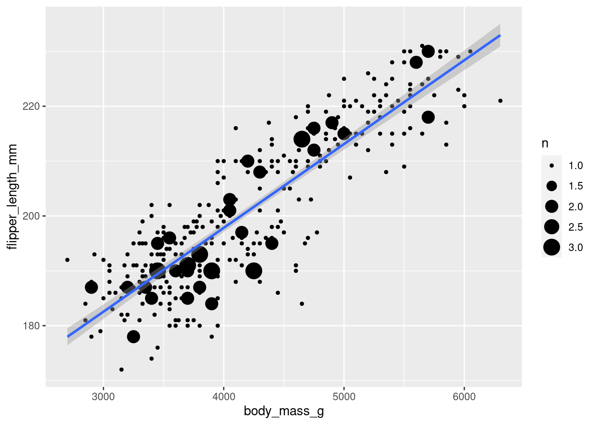
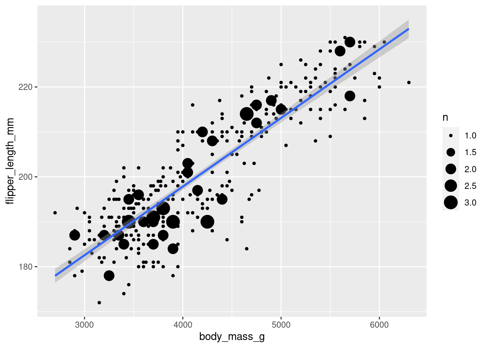

library(readr)
library(missMethods)
library(simputation)
library(ggplot2)
set.seed(1)
penguins <- readr::read_csv('penguins.csv')
ggplot(penguins, aes(body_mass_g, flipper_length_mm)) +
geom_count() +
geom_smooth(method='lm')
Introduction
As much as researchers may attempt to eliminate or reduce missing values, datasets are rarely, if ever, perfect, which can impact the legitimacy and reliability of the results obtained. There are four main reasons for missing data: missing completely at random, missing at random, missing depending on unobserved predictors, and missingness that depends on the missing value itself.
Missing data is a critical issue that can lead to global crises and cybersecurity threats. Researchers have struggled with univariate imputation and deletion, but modern methods are being tested to find the best missing data handling solutions. Multivariate chained equation imputation is a method that prevents missing data during data collection. Bayesian posterior distribution simulation has been improved by researchers. Missing data in data analysis reduces model accuracy, and unknown data detection methods like MCAR and MAR are necessary. Single imputation and deletion are the simplest assumptions, while maximum likelihood and multiple imputation are optimal for missing data. Reliable statistical results require identifying missingness processes to ensure accurate data analysis.
Missing completely at random (MCAR) is best described as data missing entirely at random and unrelated to observed or unobserved factors. Missing at random (MAR) describes a missing variable due to other observed variables within the data set. Missing depending on unobserved predictors (MNAR) describes the missing variable due to unobserved factors within our data set. Missingness that depends on the missing value describes missing data due to the information the participant does not want to make available.
When data is missing in a dataset, it can be handled in two ways. First would be to simply delete the missing data from the dataset. This is generally the best method if the data is missing at random and makes up for a small amount of the larger dataset. If the data is not missing at random, or if deleting it would remove a substantial amount of the data, there is a statistical technique to handle missing data known as “imputation.” The most common type of imputation is single and multiple. “In single imputation, imputed values are considered as actual values. Single imputation ignores the fact that the actual value cannot be predicted for sure by any imputation method. Single imputation based methods do not consider the uncertainty of the imputed values. Instead, they recognize the imputed values as actual values in subsequent analysis.” (Khan and Hoque 2020) Single imputation replaces missing values by using multiple methods, such as replacing the missing value by copying the previous participants’ value, copying over the worst value in the data set, or calculating the mean for the variable. With a single imputation, there is no distinction between observed and imputed values, which could lead to bias, influenced by outliers, can spread errors, no way to detect the imputed values, and this methodology cannot be used for complex data. Despite these drawbacks, simple imputation is one of the most popular types of imputation due to its simplicity and status as the default imputation method in many statistical packages. (Zhang 2016)
“Multivariate Imputation by Chained Equation (MICE) predicts missing data using the existing data of other variables. Then it replaces missing values using the predicted values and creates a dataset called imputed dataset. By iteration, it creates multiple imputed datasets. Each dataset is then analyzed using standard statistical analysis techniques, and multiple analysis results are provided.” (Khan and Hoque 2020) The downside of this methodology is that it can be complex to implement, assumes that the data is missing at random, has a risk of overfitting, and requires many resources; however, it has the ability to impute more accurate data than single imputation based on underlying patterns in the data
The code block below demonstrate the penguins dataset that we will be using and shows the correlation using ggplot2(Wickham 2016) between body_mass_g and flipper_legth_mm that we will be using to construct a model before and after imputation of missing data.
library(readr)
library(missMethods)
library(simputation)
library(ggplot2)
set.seed(1)
penguins <- readr::read_csv('penguins.csv')
ggplot(penguins, aes(body_mass_g, flipper_length_mm)) +
geom_count() +
geom_smooth(method='lm')
In the code block below, we will create 50% missing at random data in the column flipper_length_mm using the missMethods (Rockel 2022) package. Then we will create a linear regression to display the r-squared that would be achieved without performing any imputation on the data set.
penguins_missing <- delete_MCAR(penguins,0.5,"flipper_length_mm")
regg = lm(body_mass_g~ flipper_length_mm, data = penguins_missing, na.action=na.omit)
print(paste(summary(regg)$adj.r.squared, "is the R-Squared for the linear model where missing values are excluded from the dataset."))[1] "0.756874976743334 is the R-Squared for the linear model where missing values are excluded from the dataset."Now we will proceed to impute linear model predicted values using the simputation (Loo 2022) package into the missing data set for bill_length_mm and construct the same model to achieve an increase in r-squared.
penguins_imputed <- impute_lm(penguins_missing, flipper_length_mm ~ species + bill_length_mm + bill_depth_mm)
regg = lm(body_mass_g~ flipper_length_mm, data = penguins_imputed)
print(paste(summary(regg)$adj.r.squared, "is the R-Squared for the linear model where imputation of missing values was performed before modeling."))[1] "0.773206900379413 is the R-Squared for the linear model where imputation of missing values was performed before modeling."